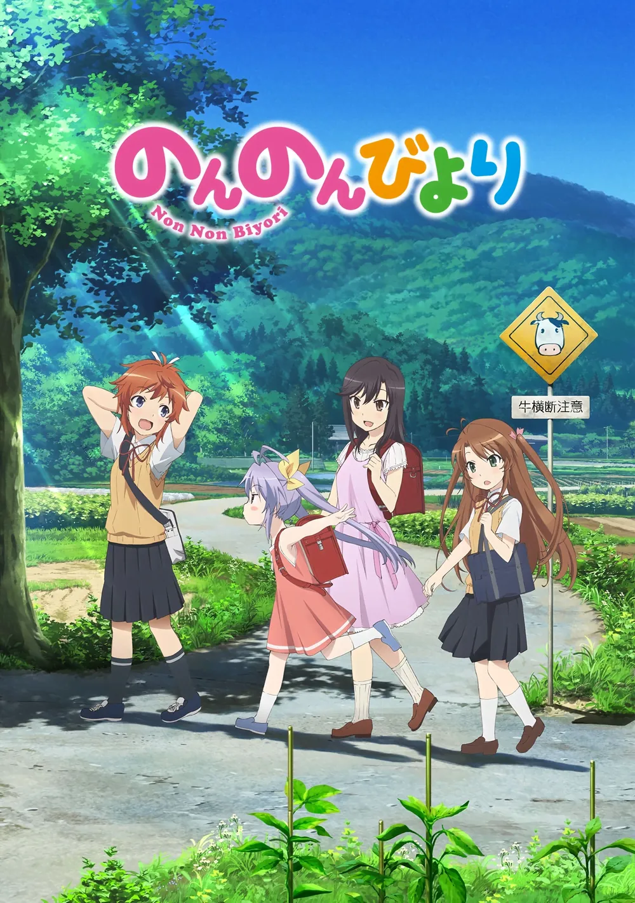
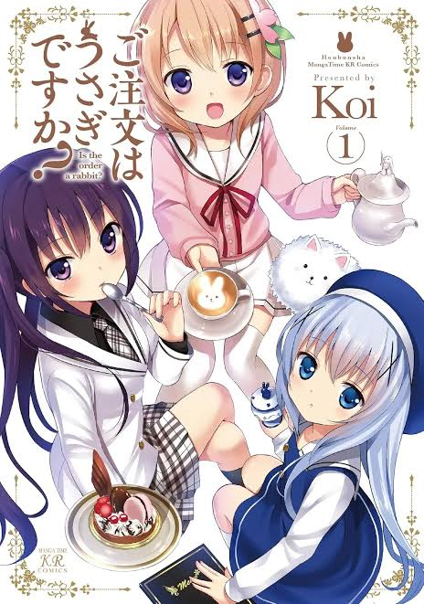
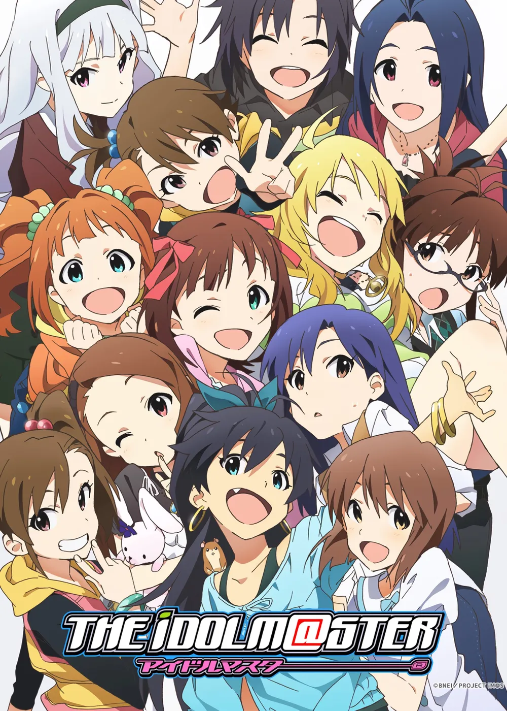
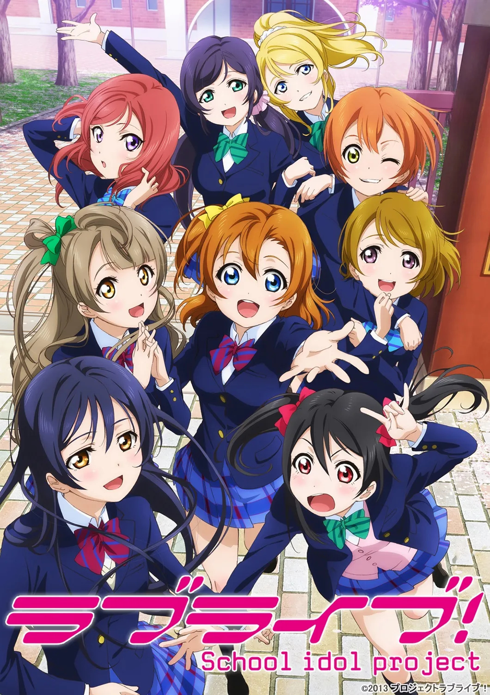

일상·관계성·아이돌의 성장
끝나지 않는 일상과 현실로 확장된 팬덤 (2010s)


1. 일상과 관계성의 반복 소비
『논논비요리』(2013) · 『주문토끼』(2014)
거대한 갈등 없이 평온한 공간에서 벌어지는 소소한 교류를
반복 소비
하며 안정과 정서적 애착 형성.
세계관의 거대한 종막 대신 '끝나지 않는 시간'을 향유하는 치유계(難民) 문화의 정착.


2. 현실과 동기화된 무대
『아이마스』(2005~) · 『러브라이브!』(2010~)
작품의 종영이 끝이 아님. 캐릭터·성우·음악이 결합하여
현실 라이브 콘서트
로 경험 확장.
음반 발매, 모바일 리듬게임, 기념일 이벤트가 맞물리며 무한히 갱신되는 2.5차원 참여형 팬덤 구축.
오토메 게임
BL 서사
남성 아이돌물
3. 세밀한 '관계성' 읽기
미시적 상호작용과 2차 창작 생태계
단순 외형 소비를 넘어 인물 간의 시선, 말투, 거리감, 신뢰와 질투 등
관계성의 맥락
을 세밀히 분석.
원작의 사소한 여백을 포착해 대규모 동인지 및 2차 창작으로 재해석·확장하는 독립된 팬덤 층위 확립.